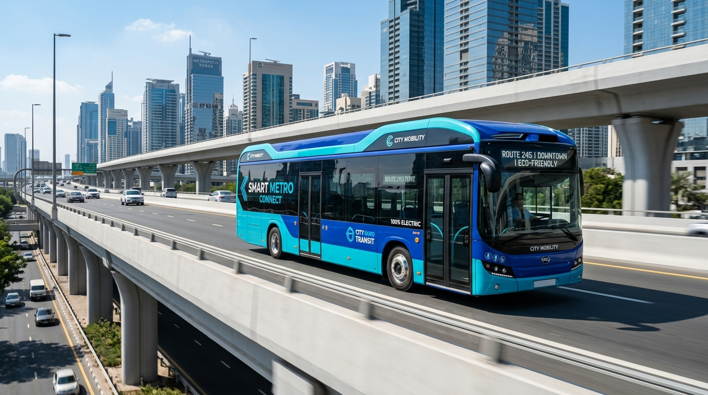
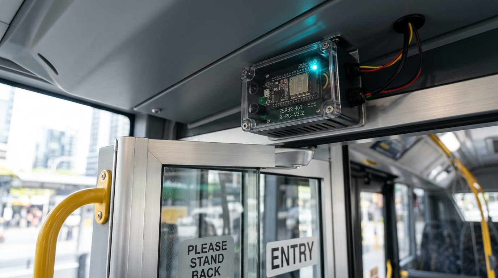

Find your bus. Track your journey. Travel smarter.

Equipped with directional dual-beam IR sensors for real-time seat counters.
Quickly tap a major transit stop to search available buses instantly
Unlike ordinary static timetables, BusMitra uses directional infrared passenger sensors connected to an ESP32 micro-controller at bus entry and exit doorways. Every boarding increases the IN counter, while alighting increments the OUT counter, providing live seat availability before the bus even arrives.
